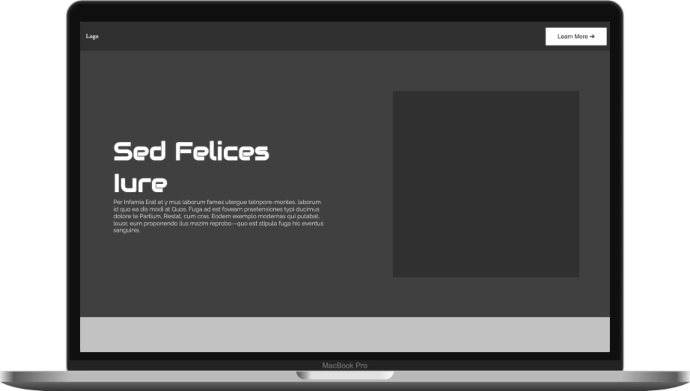

Introduction
Welcome to my portfolio. On this page you will find an overview of the assignments completed during this theme. The general focus of the 2 week program was on how to choose the right typography, color compatibility, designing layouts and UI-cards using Grid and Flex as well as learning about how to make webanimations using WAAPI and GSAP. Have a look around
- Caroline Holm Nielsen
Assignment list
Click on an assignment for more info
So what have the assignments taught me?
The course has given me many new resources to find inspiration when choosing typography pairs, and taught me which types of typography matches best. I have enhanced my skills with Grid and Flex and now know to use the former for general and complex layouts of a webpage and the latter for smaller components such as UI-cards. I have seen how good and bad color matches affect a website as well as how to use animations in a proper way to inspire but not confuse the user.